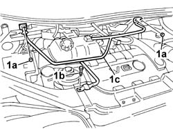
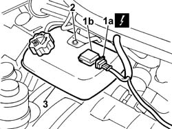
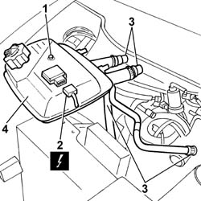
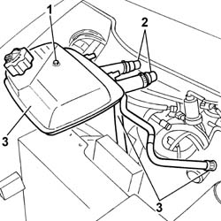

1088B10 ENGINE COOLING TANK - R + R
- Path
- Procedures > 10 ENGINE > 1088 ENGINE COOLING > 1088B ENGINE COOLING TANK - R + R > 1088B10 ENGINE COOLING TANK - R + R
- Kind
- repair procedure (removal / refitting; the operation number is the code)
- Applies to
- all engines; all production periods
- Interactive page
- https://sloeber94.github.io/elrnDB-fUlss/en/#/179007175
Applies to: engines: 3.0 24V V6; all production periods
 Removing
Removing
 Refitting
Refitting- Disconnect the negative battery terminal.
Description | Connector | |
|---|---|---|
. | Battery | A001B |
Op. 5010B18 CLIMATE CONTROL UNIT AIR INTAKE - R.R.
1. Undo the fixing nuts (1a) and the bolt (1b) and remove the bracket (1c).
Op. 5050B34 WINDSCREEN WIPER ARM/S COMPLETE WITH BLADE - R+R
Op. 7210E22 WINDSCREEN BASE TRIM

Applies to: engines: 3.0 24V V6; all production periods
1. Disconnect the electrical connection (1a) from the engine coolant level sensor (1b).
Description | Connector | |
|---|---|---|
1a | Engine coolant level sensor | K026 |
2. Loosen the bolt fixing the engine coolant reservoir and release the reservoir from the mounting.
- Fit the clamps to prevent leaks and disconnect the coolant pipes.
3. Remove the engine coolant reservoir.

Applies to: engines: 3.0 24V V6; all production periods
Refitting
Removing- Drain the engine coolant in the reservoir into a suitable container.
- Fit the engine coolant reservoir and connect the engine coolant pipes.
- Remove the clamps fitted previously to the pipes.
- Place the reservoir in position, taking care to secure the rear mounting pins.
- Tighten the bolt fixing the bracket.
- Reconnect the electrical connection to the engine coolant level sensor.
Description | Connector | |
|---|---|---|
. | Engine coolant level sensor | K026 |
- Position the bracket and tighten the fixing nuts.
Op. 7210E22 WINDSCREEN BASE TRIM
Op. 5050B34 WINDSCREEN WIPER ARM/S COMPLETE WITH BLADE - R+R
Op. 5010B18 CLIMATE CONTROL UNIT AIR INTAKE - R.R.
- Connect the negative battery terminal.
Description | Connector | |
|---|---|---|
. | Battery | A001B |
Applies to: engines: 2.0 16V JTD; all production periods
Removing
Refitting- Disconnect the negative battery terminal.
1. Loosen the engine coolant reservoir fixing bolt.
2. Disconnect the electrical connection for the coolant level sensor.
- Fit the constricting terminals on the coolant pipes to be disconnected.
3. Disconnect the coolant pipes at the point shown.
4. Remove the engine coolant reservoir.

Applies to: engines: 2.0 16V JTD; all production periods
Refitting
Removing- Drain the engine coolant in the reservoir into a suitable container.
- Fit the engine coolant reservoir and connect the coolant pipes to it.
- Remove the terminals fitted previously on the pipes.
- Position it in the housing taking care to secure the rear retaining pins.
- Position it in the housing taking care to secure the rear retaining pins.
- Connect the electrical connection for the coolant level sensor.
- Tighten the bolt fixing the mounting bracket.
Op. 0010T21 COOLANT CHECK DENSITY AND TOP UP IF NECESSARY
- Connect the negative battery terminal.
Applies to: engines: 2.0 16v; all production periods
Removing
Refitting1. Loosen the engine coolant reservoir fixing bolt.
- Fit the constricting terminals on the coolant pipes to be disconnected.
2. Disconnect the coolant pipes at the points shown.
3. Remove the engine coolant reservoir.

Applies to: engines: 2.0 16v; all production periods
Refitting
Removing- Drain the engine coolant in the reservoir into a suitable container.
- Fit the engine coolant reservoir and connect the coolant pipes to it.
- Remove the terminals fitted previously on the pipes.
- Position it in the housing taking care to attach the rear retaining pins.
- Tighten the bolt fixing it to the mounting bracket.
Applies to: engines: 2.2 16V JTD; all production periods
Removing
Refitting- Disconnect the negative battery terminal.
1. Loosen the engine coolant reservoir fixing bolt.
2. Disconnect the electrical connection for the coolant level sensor.
- Fit constricting terminals on the coolant pipes to be disconnected.
3. Disconnect the coolant pipes at the points shown.
4. Remove the engine coolant reservoir.
Applies to: engines: 2.2 16V JTD; all production periods
Refitting
Removing- Drain the engine coolant in the reservoir into a suitable container.
- Fit the enginen coolant reservoir and connect the coolant pipes to it.
- Remove the terminals fitted previously on the pipes.
- Place it in position taking care to secure the rear retaining pins.
- Connect the electrical connection for the coolant level sensor.
- Tighten the bolt fixing the mounting bracket.
Op. 0010T21 COOLANT CHECK DENSITY AND TOP UP IF NECESSARY
- Connect the negative battery terminal.
Topics linked from this page (4)
- 0010T21 ENGINE COOLANT - CHECK DENSITY AND CHANGE, IF NECESSARY
- 5010B18 CLIMATE CONTROL UNIT AIR INTAKE - R.R.
- 5050B34 WINDSCREEN WIPER ARM/S COMPLETE WITH BLADE - R+R
- 7210E22 WINDSCREEN BASE TRIM
Topics that link to this page (13)
- X10 ENGINE COOLANT LEAKS
- 1004B14 POWER UNIT WITH AUTOMATIC TRANSMISSION R + R
- 1008A46 POWER UNIT RIGID SUPPORT - TIMING SIDE - R.R.
- 1008B10 POWER UNIT FRONT SUPPORT FLEXIBLE MOUNTING (TIMING SIDE) - REPLACE
- 1008C10 POWER UNIT UPPER SUPPORT - R R
- 1008C14 ENGINE LINK BRACKET - R R
- 1032B10 TOOTHED TIMING BELT - R + R FOR TIMING ADJUSTMENT OR REPLACEMENT
- 1032B46 TOOTHED DRIVE PULLEY - R + R
- 1032B52 TOOTHED DRIVEN PULLEY (ONE) - R + R
- 1036C39 TIMING VARIATOR ON CYLINDER HEAD INTAKE CAMSHAFT - R R
- 1036G10 CAMSHAFT CONTROLLING VALVES IN LEFT CAMSHAFT HOUSING - R.R. - INCLUDES REPLACEMENT OF CAMSHAFT HOUSING, IF NECESSARY
- 1072B10 INLET MANIFOLD - R + R AND REPLACE SEAL
- 2130A10 AUTOMATIC TRANSMISSION - R + R